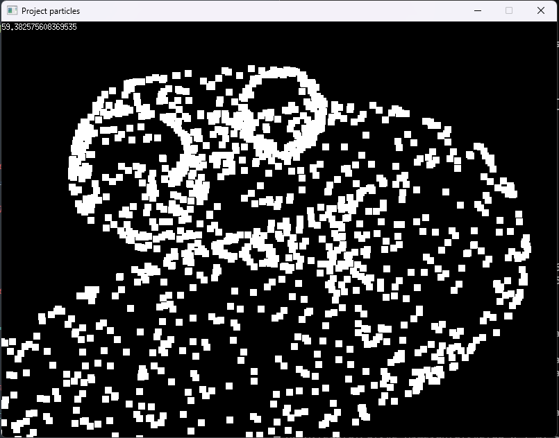

Système de particules
Un système de particules colorées dynamiques créant des animations fluides et interactives. Ce projet explore la programmation graphique en Go avec Ebiten, combinant la physique des particules, les événements utilisateur et l'optimisation de performance pour un rendu temps réel impressionnant.



Projet universitaire réalisé en trois semaines, en duo. Créé dans le cadre d'un travail pratique pour approfondir la programmation graphique et les concepts de physique appliquée aux animations.
Le système génère et anime des particules colorées en temps réel, avec des interactions au clavier et à la souris. Les particules suivent des lois physiques pour des mouvements naturels et fluides. Le projet combine la gestion d'événements utilisateur avec un moteur de rendu optimisé, assurant une performance stable même avec un grand nombre de particules simultanées. Nous avons travaillé sur l'architecture du code pour le rendre modulaire et facilement extensible avec de nouvelles fonctionnalités et extensions.
- Programmation avancée en Go/Golang avec la framework Ebiten
- Implémentation de la physique des particules et des animations fluides
- Gestion complète des événements clavier/souris pour l'interactivité
- Optimisation de performance et rendu efficace en temps réel